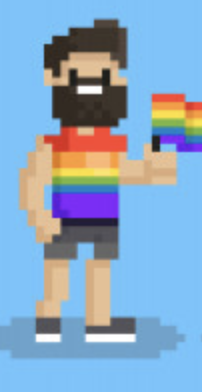
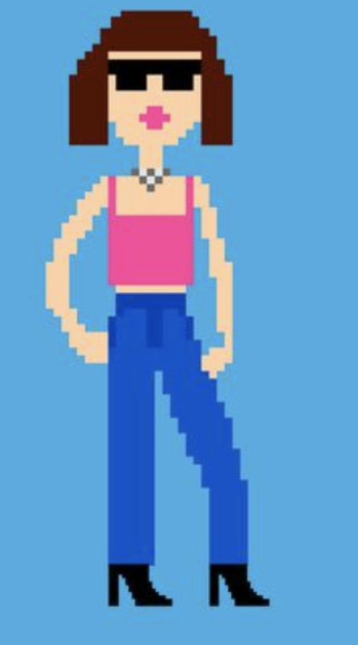
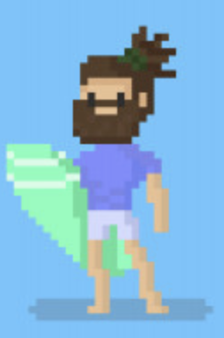
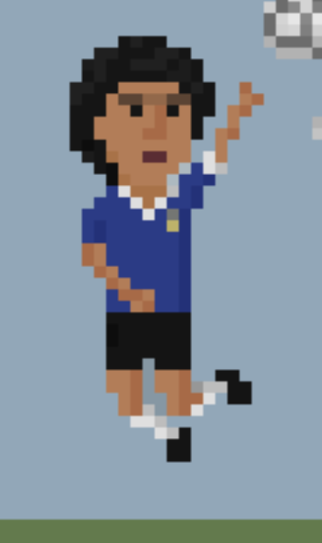

Bob has been with us since 1997. Back then space traveling was only
a big dream. But Bob dreamed big, quit his job at Starbucks and
showed up on our doorstep every single day until 35 years later we
could finally hire him. We entrusted him with the interior design of
our first space shuttle. And what can we say? He invented the famous
chameleon barf bags that matched the colour of your barf. And then
he applied the same principle to our comfy loos.

Rita is our space philosopher and most versatile tour guide. She’s
helped many of our first customers through minor symptoms of culture
shock, feelings of being “small and meaninlgess compared to eternal
space”, won many joke competitions and teaches our honeymoon
travelers on how to have intercourse in zero gravity.

Keanu has the same name as a Hollywood actor and works as our
fitness guide. Zero gravity melts your muscles away like ice cream
disappears in the sun. Thanks to Keanu none of you protein and
workout addicts will lose your shape. He’ll teach you how to stay
healthy on board and is famous for his space Zumba classes.

Hans is Austiran with Indian and Turkish roots and speaks seven
earth languages on native level. If he compbines three of them he is
able to understand most intergalactic radio communication and can
translate from and into 3 different alien tongues: klingonic,
alienic and Venusian dialect. Until google has developed their
translation app to an inter planetarian level, Hans is our biggest
asset. And: Don’t miss out on his Strudel!
Diversity is part of our corporate philosophy. This is Monday. We
don’t know his real name and until he learned our language we can
only make guesses about his biography. Even though we cannot
communicate with Monday, we love his sense of humor, how he dresses
and the way he eats doves: he bites off their head first, like
eating a chocolate easter bunny.